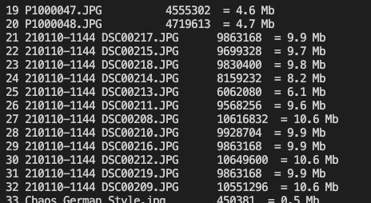
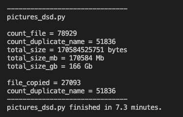
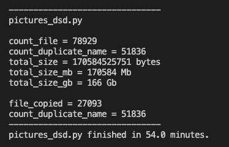

quick script to copy ~80k media files with duplicates
16 Jul 2022 | in python
tags: python
scripts
I needed to copy selected media files (based on extension) from a server with complicated sub-folder structure and many duplicates.
A raw copy process sing (Path)Finder, it took 12+ hours and ended up with some errors.
So I decided to write a quick script and start again.
First I walked the root folder to identify all file extensions at play:
Then I used that list of extensions to filter the file types I needed to copy over:
# Copy Pictures from server folder to local
import os
import shutil
import time
start_time = time . time ()
test = True
count = 0
count_file = 0
count_duplicate_name = 0
file_copied = []
# commenting out the extensions I don't want to copy over, from the set obtained with an initial os.walk
valid_extensions = (
# '',
# '.jso',
'.png' ,
'.mp4' ,
'.jpg_' ,
'.PNG' ,
'.mov' ,
# '.json',
# '.js',
# '.j',
'.bmp' ,
'.m4v' ,
# '.mp3',
'.jpeg' ,
# '.url',
'.AVI' ,
'.mpg' ,
'.m4a' ,
'.psd' ,
'.JPG' ,
# '.tmp',
# '.m',
'.jpg' ,
# '.ini',
# '.rss',
'.avi'
)
total_size = 0
for root , dirs , files in os . walk ( "/path/to/source/folder" ):
for name in files :
if name . endswith ( valid_extensions ):
count_file += 1
file_size = os . path . getsize ( f " { root } / { name } " )
file_size_mb = file_size / 1e+6
total_size += file_size
print ( count_file , name , ' \t ' , file_size , f " = { round ( file_size_mb , 1 ) } Mb" )
if name in file_copied :
count_duplicate_name += 1
else :
if not test :
shutil . copy2 ( f ' { root } / { name } ' , '/path/to/destination/folder' )
file_copied . append ( name )
##########
if __name__ == '__main__' :
print ()
print ()
print ( '-------------------------------' )
print ( f " { os . path . basename ( __file__ ) } " )
print ()
print ( f "count_file = { count_file } " )
print ( f "count_duplicate_name = { count_duplicate_name } " )
print ( f "total_size = { total_size } bytes" )
print ( f "total_size_mb = { int ( total_size / 1e+6 ) } Mb" )
print ( f "total_size_gb = { int ( total_size / 1e+6 / 1024 ) } Gb" )
print ()
print ( f "file_copied = { len ( file_copied ) } " )
print ( f "count_duplicate_name = { count_duplicate_name } " )
print ( '-------------------------------' )
run_time = round (( time . time () - start_time ), 1 )
if run_time > 60 :
print ( f ' { os . path . basename ( __file__ ) } finished in { round ( run_time / 60 , 1 ) } minutes.' )
else :
print ( f ' { os . path . basename ( __file__ ) } finished in { round ( run_time , 1 ) } s.' )
print ()
Notes
everything under ########## is my standard footer for Python script, ie optional
the test variable enables to run tests without copying anything while True. Changing to False enables to run the copy process.
I copied the list of all extensions from the first run and commented out the extensions I don't want to copy
the shutil.copy2 method overwrites files, ie taking care of duplicates natively
prints:

test result:

run result (copying files):
